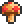

Гриб (Mushroom) — один из видов грибов, который можно найти в лесу. Растёт только на обычной траве. Нельзя поставить. Восстанавливает 15 ед. здоровья.
Фарминг
Для фарминга обычных грибов нам понадобится земля и семена травы/посох травы. Грибы растут только на горизонтальных дорожках из травы. Ещё одна необходимость в отсутствии задних стен, вы можете построить ферму грибов в небе, но не можете в аду или данже. Грибы, как и деревья, способны расти в зоне видимости игрока. Грибы можно собирать любым инструментом. Чтобы упростить сбор грибов, можно использовать ловушки с дротиком.
История
-
Версия 1.3.1:Новый спрайт:→
-
Версия 1.3.0.1:Теперь стоит 2
 50
50 .
. -
Версия 1.0.6:
- Понижено количество восстанавливаемого здоровья с 20 до 15.
- Теперь накладывает дебафф послезельевая болезнь.
-
Версия 1.0.4:Теперь дешевле продаётся.
-
Пре-релиз:Гриб добавлен в игру.